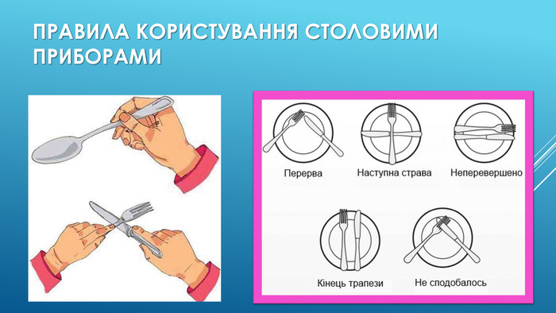

Клікніть на зображення зі столовими наборами, щоб перейти на нову сторінку і ознайомитись з правилами їх використавання

Практикуємо створювати Фонове зображення
Чому обрати саме КПІ?
Чому обрали саме цей ВНЗ?
– Київський політехнічний інститут – це гордість нашої держави,
тому для мене велика честь навчатися саме тут.
Відвідавши КПІ ще у період навчання у школі, я зрозумів,Б
що це саме те, що мені потрібно для перспективного майбутнього.
Метою web-браузера є читання НТМL документів та їх відображення. Браузер не відображає самі теги HTML, але використовує їх, щоб визначити як відобразити веб-сторінку.
В браузері відображається тільки зміст розділу (тіло веб-сторінки).
Теги
це назви елементів, оточені кутовими дужками. Наприклад: <назва тегу> Тут йде зміст….
Теги зазвичай йдуть парами.
Початковий тег також називається відкриваючим, а кінцевий тег - закриваючим.
Атрибути
Атрибут href
Атрибут src
Атрибути width та height
Атрибут alt
Атрибут style
Стандарт HTML5 не вимагає імен атрибутів в нижньому регістрі.
Далі створимо таблицю з межами та з розщміром чарунки, що перевищуж один рядок та має капчу
Для додавання межі таблиці використовуємо CSS властивість "border"
Щоб розмір чарунки перевищував один рядок, використовуємо атрибут "rowspan"